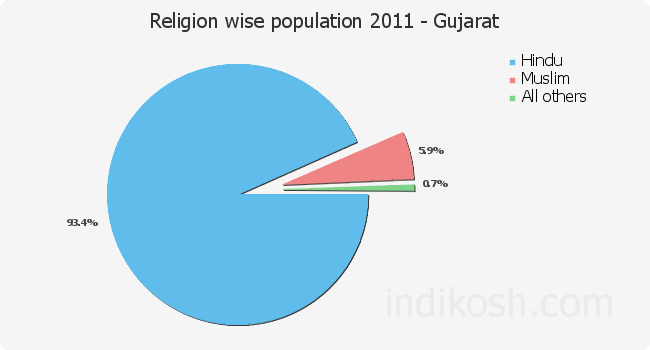

Gujarat Religious Data
Census 2011

Religion
Population
Percentage
Hindu
53,533,988
88.57%
Muslim
5,846,761
9.67%
Jain
579,654
0.96%
Christian
316,178
0.52%
Sikh
58,246
0.10%
Not Available
57,902
0.10%
Buddhist
30,483
0.05%
Other Religion
16,480
0.03%
By
Chandresh Padmani (18CE062)